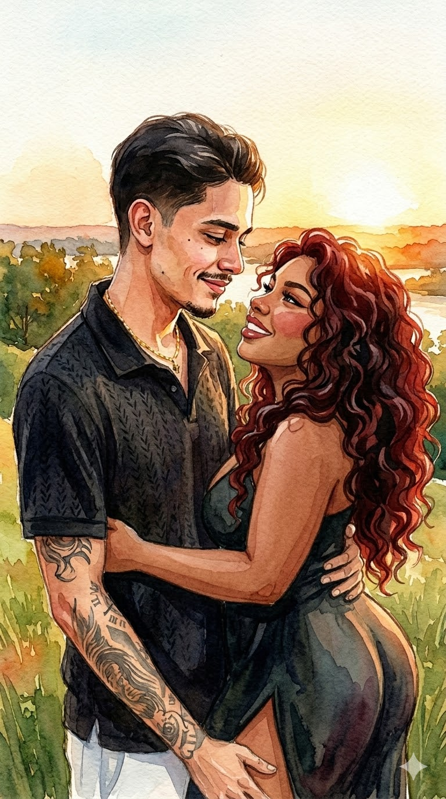
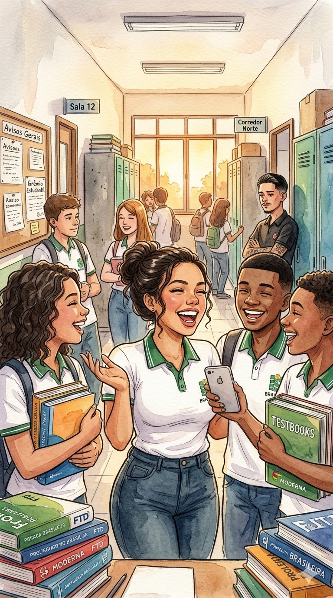
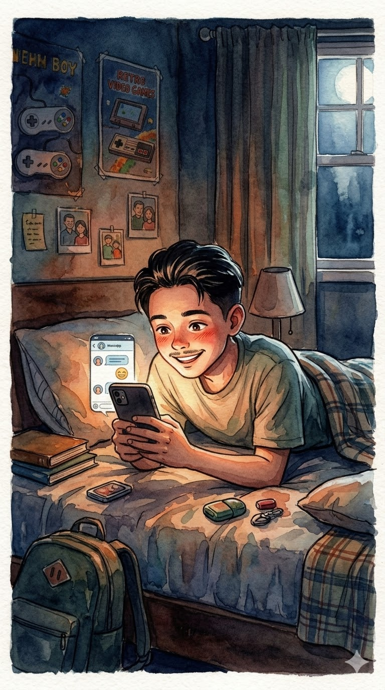
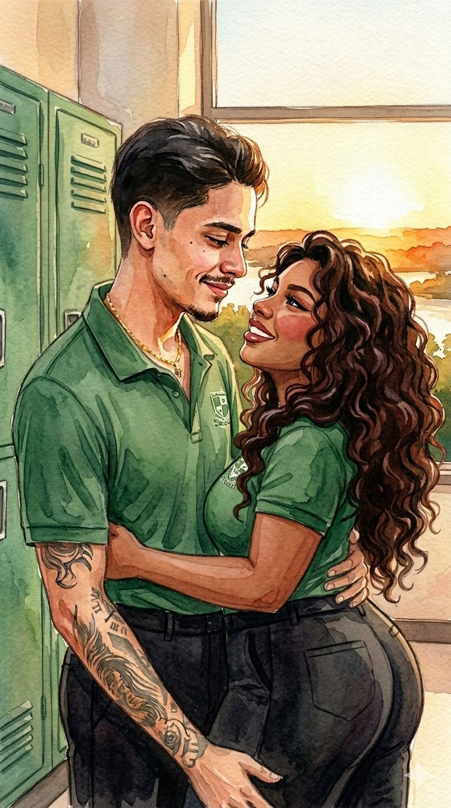
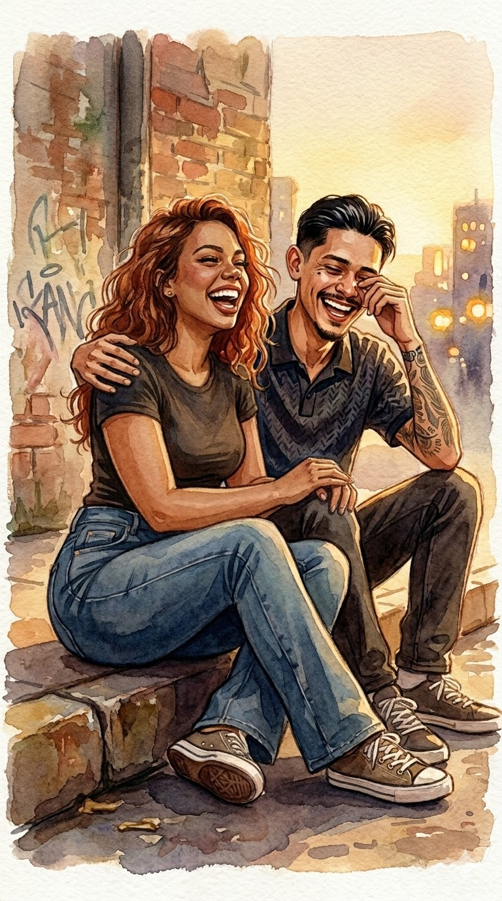
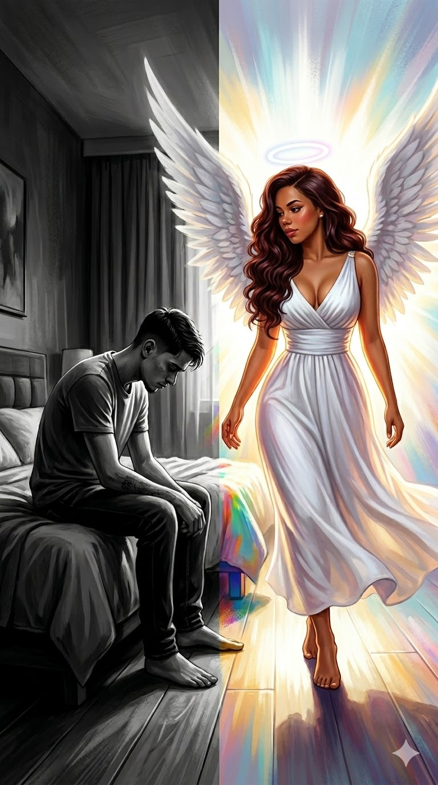
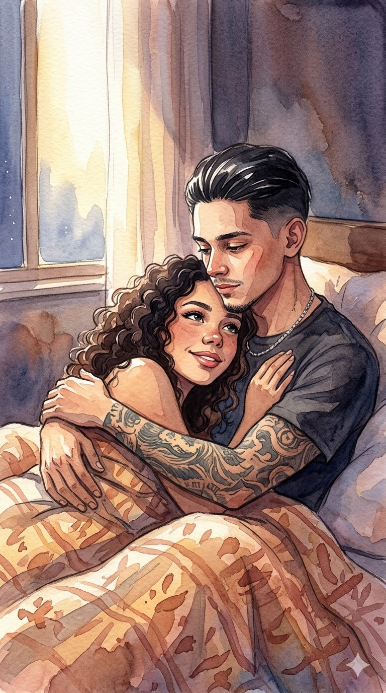
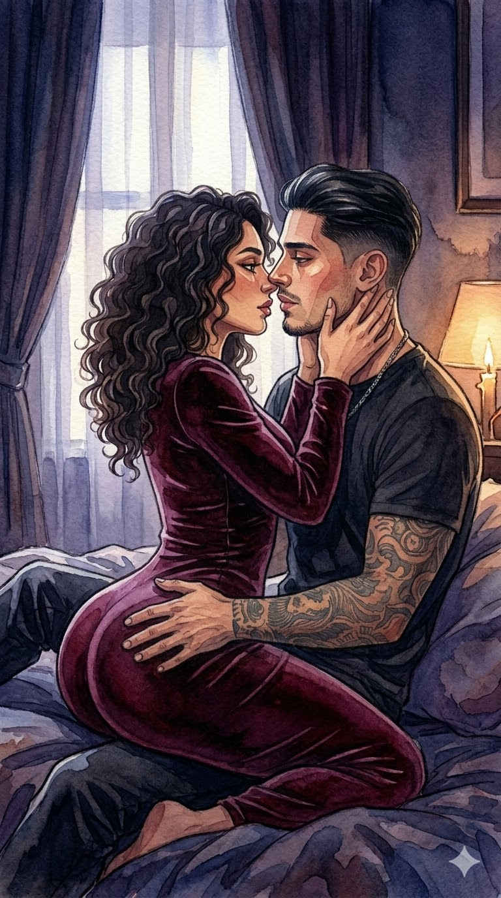
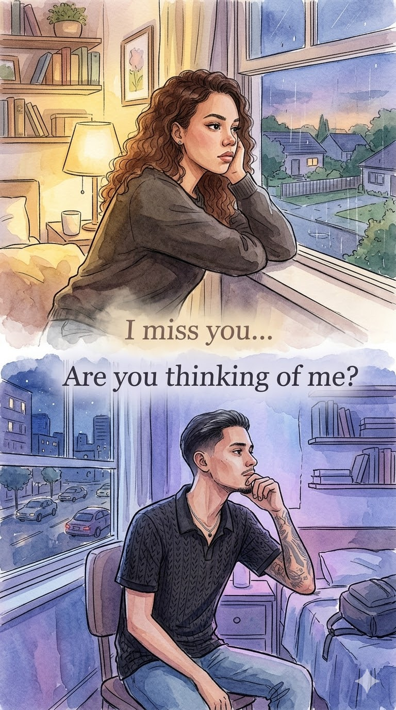
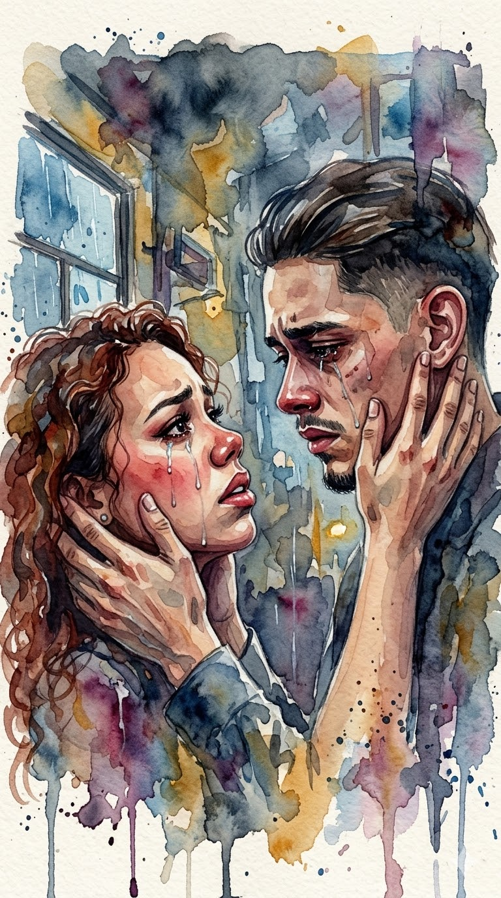

O Contexto
Então... para você entender o quanto eu te amo e o quanto você é importante para mim, precisamos voltar no tempo e entender todo o contexto. Pois meu amor por você não é algo que simplesmente começou com uma paixão, é o primeiro caso que eu vejo do amor vir antes da paixão.
Introdução
Como tudo começou
Tudo começou em 2018, quando começamos a estudar juntos. Até aí, apenas uma menina bonita normal, não conversávamos muito, porém era alguém que sempre estava rindo, sempre estava com energia boa. Mas até então nunca fomos tão próximos, apenas colegas de classe. Até então seria apenas uma pessoa comum na escola onde não teria nada demais.
Ano de 2018
O pontapé inicial
Até que um dia me chamou no WhatsApp para conversar. Eu, todo inocente, achando que era só para conversar, mal sabia que ali começava uma história que teria várias e várias fases e todas muito perfeitas. Depois dali conversamos, nos provocamos, porém como você namorava, nunca teve nada demais além das conversas e isso durou pouco tempo. Mas ali efetivamente começou o nosso contato a ser mais próximo e íntimo.
A primeira mensagem
O Beijo
Então depois de um tempo de conversa, e você havia terminado seu namoro, marcamos de ficar. Mal sabia você o quanto eu estava ansioso e amando tudo aquilo, e o quanto você me fazia bem já naquele tempo. E enfim ficamos, foi apenas um beijo para você, mas para mim foi "O BEIJOO".
Nosso momento
Minha Melhor Amiga
E após isso nunca perdemos o contato, sempre estávamos conversando todos os dias no WhatsApp, mas sem outras intenções. Foi a primeira pessoa com quem sempre conversei sobre tudo, sempre me preocupei e com o tempo fomos ficando muito próximos. Até que você se mudou de escola, e a gente perdeu o contato pessoalmente, mas sempre estávamos ali, conversando, você sempre me ajudando e eu te ajudando. Algumas vezes acabávamos nos perdendo ficando alguns meses sem se falar e eu sempre pensava "será que um dia vamos voltar a ser próximos?" e quando eu menos esperava você me mandava mensagem de novo para saber como eu estava. Você literalmente sempre estava ali, e sempre lembrava de mim independente do momento que estávamos vivendo. E durante todo esse tempo a gente sempre soube separar muito bem, sempre te achei linda, gostosa, mas nesse período não conseguia ver maldade, embora algumas vezes pensasse "e se rolasse algo?".
Parceria sempre
O Anjo
E depois de vários anos como melhores amigos, quando eu acho que não podia mais me surpreender com você, tudo acontece de novo. Após eu estar passando por uma fase muito difícil, apareceu você na minha vida novamente depois de tempos sem se falar. E é incrível como tudo que parecia estar desmoronando, quando estava falando com você ou quando estava com você tudo parecia se reconstruir novamente, tudo voltava a ter vida e o mundo a ser feliz. Você nem imagina o quanto você foi importante para mim em todo o período que estivemos juntos, mas nesse período você realmente foi um anjo na minha vida.
A salvação
Clima
Em um desses encontros, em que vinha me visitar, tudo começou diferente desde o primeiro minuto que te vi. Estava mais linda que nunca, com um perfume doce que até hoje me lembro o cheiro, que quando te abracei foi impossível não perceber. Tudo estava diferente, mas não sabia explicar o que estava diferente, e como sempre conversamos, rimos, nos divertimos e eu não parava de pensar no clima que estava, na energia que estava e estar confuso ao mesmo tempo em não saber o que estava acontecendo. Mas agimos normalmente, fomos nos deitar, logo você deitou no meu peito, assistimos vídeos juntos, e nos viramos para dormir, até que você me pediu para dormir de conchinha. Na hora que eu te abracei, toda aquela energia e clima "estranho" fez sentido para mim. Demorei a conseguir dormir, e quando peguei no sono tive um sonho, na qual nunca tinha acontecido antes e só comprovou o que era o clima "estranho" porém bom, mas dormimos e nada rolou.
A Noite
Primeira Vez
Então no dia seguinte, novamente você foi me ver e novamente o mesmo clima presente. Rimos e conversamos, mas nesse dia sentia que ainda estava pior. Eu não conseguia parar de te admirar, não conseguia parar de te olhar e pensar "Que mulher gostosa". Você com aquele vestido longo colado, porém que marcava perfeitamente a gostosa que você é, e com aquele decote, e você parecia que sabia tudo que estava fazendo, e eu não conseguia parar de pensar "QUE GOSTOSA". Até que fomos nos deitar, e daí sinceramente.... não lembro de mais nada, apenas o que estava passando na minha cabeça os pensamentos que tinham a ver com o sonho da noite anterior. E você sempre muito perto de mim já tava me deixando louco, até que quando vi, já estávamos nos beijando e "QUE BEIJOO GOSTOSO". A princípio era apenas um beijo, mas no clima que estava e aquele beijo gostoso foi impossível ficar apenas no beijo. Quando vi já estava beijando outro lugar e que por sinal era tão gostosa quanto sua boca. Ver você daquele jeito me deixou cada vez mais com vontade de você, a menina que sempre achei gostosa, conseguiu ser ainda mais gostosa sem roupa. Que noite incrível.
Inesquecível
O Pós
Enfim, depois dessa noite você voltou para sua cidade, e você não saía da minha cabeça. Porém ambos ficaram com receio de perguntar como foi e comentar como foi a noite maravilhosa, e ficamos em silêncio. Eu achei que você havia se arrependido, e vivemos novamente a nossa vida de amigos. Mal sabíamos que os dois estavam se amando e não saíam um da cabeça do outro nos pensamentos mais perfeitos que podiam existir.
O Segredo
O Caos
Com tudo isso acontecendo, acabou que tivemos o nosso pior momento da história. Pois depois que entrei em um relacionamento, você realmente disse tudo que tinha para dizer sobre nós, porém era tarde, não havia o que ser feito. Você por muitas das vezes chorou, se magoou, eu também me magoava em ver você daquele jeito mas não tinha como fazer nada. Mas eu sempre prometi que logo logo a gente estaria junto. E sabe o mais incrível disso tudo? Você mesmo assim nunca me abandonou, mesmo doendo, mesmo se machucando todos os dias você sempre torcia por mim, sempre estava comigo e sempre me amouu. Isso só mostra o quão incrível você sempre foi e continua sendo.
A Prova
O Encontro
E como eu prometi, realmente depois de pouco tempo a gente podia começar a viver o nosso romance. E confesso, está sendo o amor mais sincero e perfeito que eu já podia ter sentido, onde não tem insegurança, onde eu posso ser eu, e também sintoo o seu amor cada dia mais.
Hoje